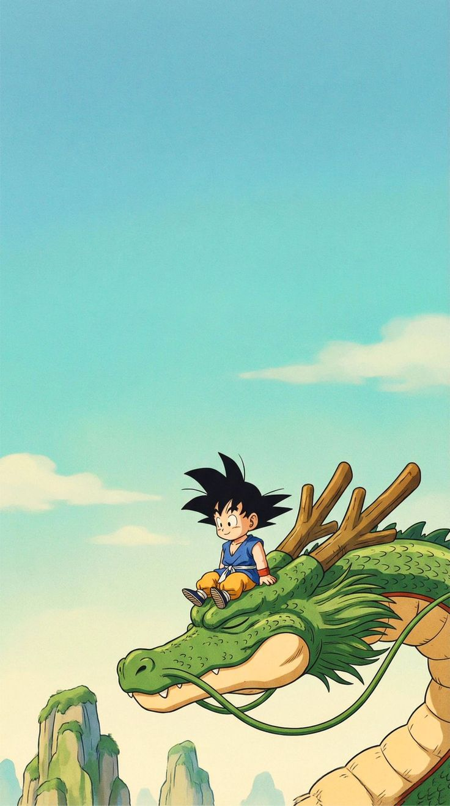
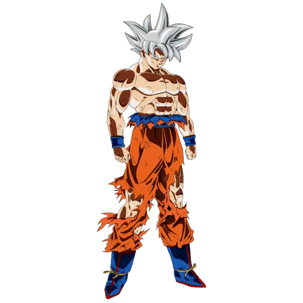

Todo comenzó con una esfera de cuatro estrellas y un corazón puro en las profundidades del Monte Paozu. A lomos de Shenron, el mundo parecía infinito para un niño con cola que desconocía su herencia saiyajin.
Conoció la amistad genuina, el rigor del entrenamiento del Maestro Roshi y el amargo dolor de la pérdida. Cada rival, desde las ambiciones del Ejército de la Patrulla Roja hasta el terror del Rey Demonio Piccolo, forgó su espíritu inquebrantable. No buscaba conquistar el mundo ni ser un héroe, solo ansiaba superar sus propios límites y proteger a quienes amaba.

El calor de incontables batallas se ha desvanecido, dejando paso a una calma aterradora. En medio del Torneo del Poder, frente a la inminente aniquilación de su universo, la mente y el cuerpo finalmente se desconectaron de las emociones ordinarias.
Ya no hay pensamiento previo, solo reacción pura y perfecta. El aura se torna de un calor inmenso pero de una quietud absoluta, fluyendo como galaxias naciendo en el vacío. Su cabello plateado destella en el abismo; ha roto la barrera que ni los mismísimos Dioses de la Destrucción logran dominar. Este es el estado definitivo. La perfección marcial en movimiento continuo.